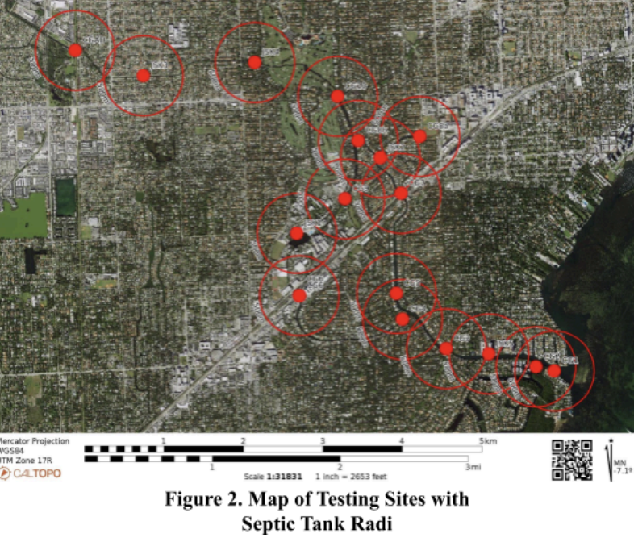

miami waterkeeper septic tank research
Nonprofit collaboration and environmental data analysis


Research project conducted along South Florida's waterways in collaboration with Miami Waterkeeper and International Seakeeper Society. The work focused on environmental data analysis, septic tank database processing, and GIS correlation studies.
research components
- Python data pipelines to parse and process government septic tank databases.
- R statistical analysis for correlation studies and modeling.
- GIS data integration for environmental and geographic analysis.